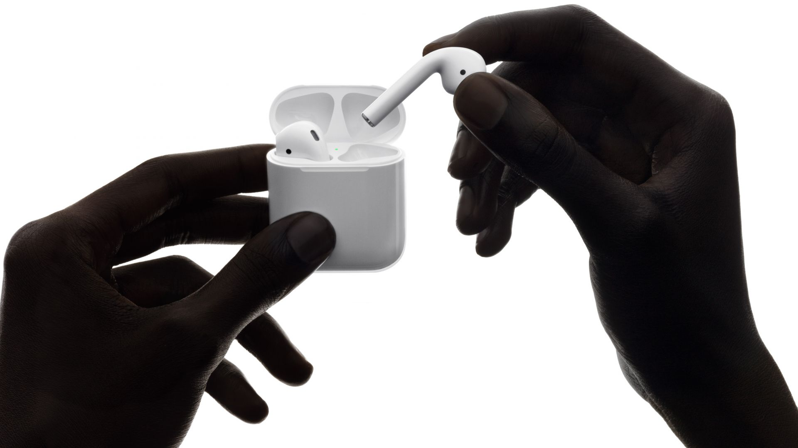

Now with more talk time, voice-activated Siri access — and a
new wireless charging case — AirPods deliver an unparalleled
wireless headphone experience. Simply take them out and
they’re ready to use with all your devices. Put them in your ears
and they connect immediately, immersing you in rich,
high-quality sound. Just like magic.

The power of 24-hour battery life.
AirPods deliver an industry-leading6 5 hours of listening time7 - and now up to 3 hours of talk time8 - all on one charge. And they're made to keep up with you, thanks to a charging case that holds multiple charges for more than 24 hours of listening time. 9 Need a quick charge? Just put AirPods back in the case for 15 minutes to get up to 3 hours of listening time10 and 2 hours of talk time. 11 To check the battery, hold the AirPods next to your iPhone or ask Siri "How's the battery on my AirPods?"
More than
24 hr of battery life with charging case
Up to
5 hr
of listening time on one charge Only
15 min
of charging provides up to 3 hours of listening time